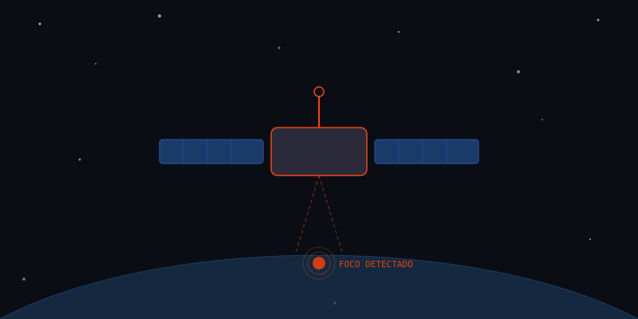
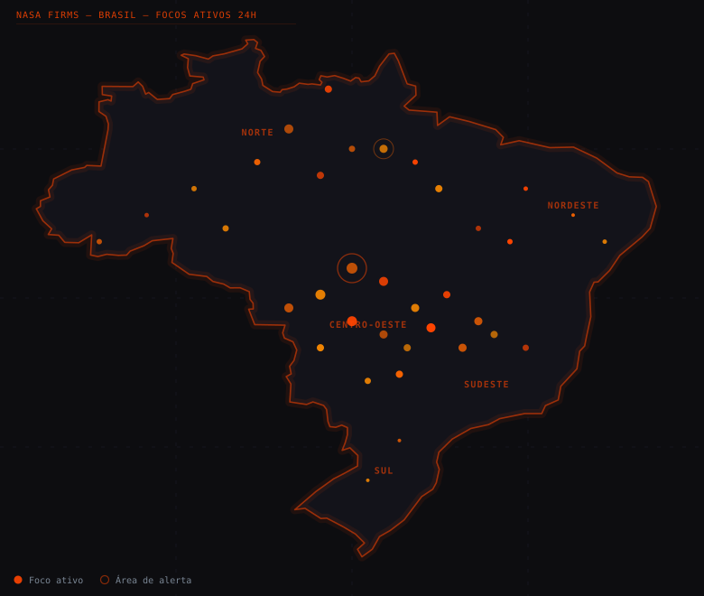
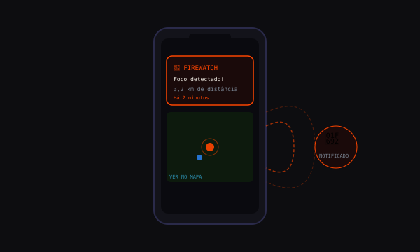

Queimadas detectadas antes que seja tarde demais
Monitoramento satelital em tempo real com alertas em menos de 3 minutos.

01 — O PROBLEMA
Urgência
O Brasil registra mais de 220 mil focos de calor por ano.
Sem monitoramento automático, o fogo pode crescer por dias sem resposta.

Registrados pelo INPE em 2023.
Sem satélite, o fogo cresce por dias.
Perdas agropecuárias e ambientais no Brasil.
A maioria tem origem humana, segundo o INPE.
01B — GALERIA
O fogo em imagens
Registros do impacto das queimadas no Brasil.
02 — A TECNOLOGIA
Como detectamos o fogo
Dados orbitais, sensores IoT e Python integrados num pipeline de alertas.

NASA FIRMS
Imagens termais dos satélites MODIS e VIIRS, atualizadas a cada órbita.
Dados orbitaisArduino IoT
Sensores de fumaça (MQ-2) e temperatura (LM35) simulados em campo.
Edge ComputingPython Analytics
Modelagem exponencial para prever propagação com base no vento e umidade.
Análise preditivaAPI de Alertas
Notificações automáticas para autoridades e moradores em risco.
AutomaçãoDashboard Geoespacial
Mapa com focos ativos, histórico e camadas de risco climático.
VisualizaçãoINPE Open Data
Banco histórico do INPE para padrões sazonais e validação das detecções.
Dados históricos03 — OBJETIVOS
O que o FireWatch entrega
Quatro objetivos para reduzir o tempo entre detecção e resposta.
Detecção precoce automatizada
Identificar focos em até 3 minutos após nova imagem orbital.
Alertas geolocalizados
Notificar usuários por proximidade ao foco ativo.
Predição de propagação
Estimar área em risco nas próximas horas com modelagem matemática.
Relatórios para gestores
Painel histórico por bioma, estado e período.
04 — PÚBLICO-ALVO
Quem usa o FireWatch
Do morador em área de risco ao gestor público que precisa agir rápido.

Bombeiros
Coordenadas do foco e estimativa de propagação para planejar o combate.
IBAMA & INPE
Histórico analítico para políticas públicas e relatórios ambientais.
Produtores Rurais
Alertas preventivos para proteger propriedade e colheita a tempo.
Moradores de Risco
Notificação no celular quando há foco no raio configurado.
05 — IMPACTO & BENEFÍCIOS
Cada minuto conta
De 72 horas de espera para menos de 45 minutos de resposta.
Da detecção até o combate ativo no campo.
Com alerta precoce, o fogo é contido antes de se alastrar.
Monitoramento orbital contínuo em qualquer bioma do Brasil.
100% baseado em APIs públicas da NASA e INPE.
06 — APLICAÇÃO
Acesse o sistema
Protótipo conceitual de plataforma integrada com painel web e alertas móveis.